GETTING STARTED / 02
Create gameplans.
A game plan defines the match: where and when the safe zones move, and what resources can be found around the battlefield.
An Android device, a MapBuilder site package and CombatLR Mobile. The app currently supports Android only. A tablet is recommended because the map editor and game-plan controls are easier to use on a larger screen.
1. Prepare the CombatLR folders
Connect your Android device to a Windows PC using a USB cable. Unlock the device and, if prompted, choose File transfer as the USB connection mode. Windows should then show the device in File Explorer under This PC.
In File Explorer, open the device's internal storage and then its Documents folder. Create a folder named CombatLR
directly inside Documents if not already present.
Inside CombatLR, create a separate folder for your game plan and give it a sensible name, e.g. AlexandraPark.
Create a different named folder for each game plan you want to keep.
Documents/
└── CombatLR/
└── AlexandraPark/Copy the MapBuilder site package files, map.bmp and map.json, into the AlexandraPark folder using Windows File Explorer.
The mobile app presents a folder list to select the plan you wish to use.
2. Start with a project and map
Open CombatLR Mobile and select the game project you want to work on.
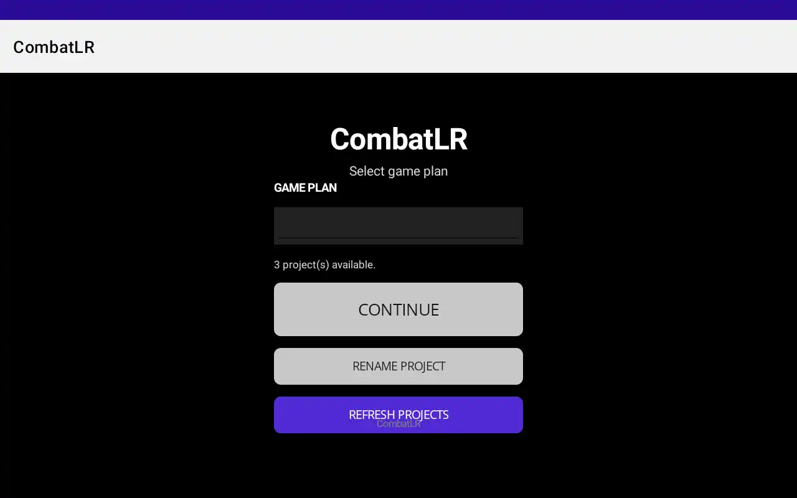
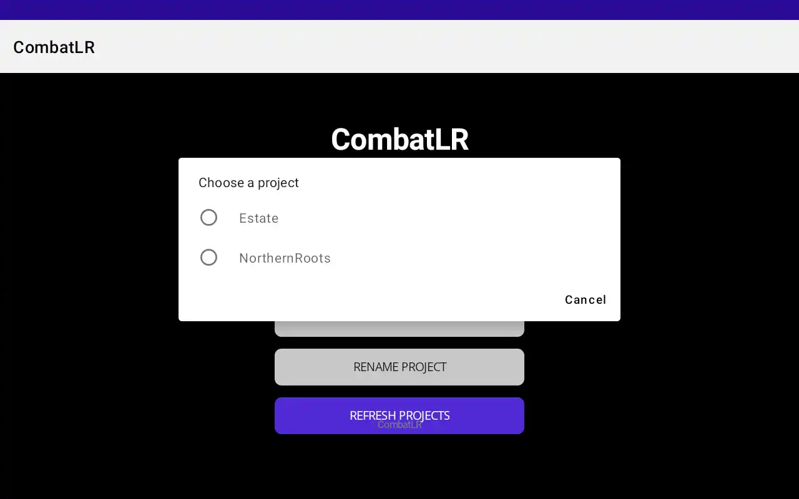
If a folder does not show in the list, check it contains map.bmp and map.json files.
To rename a folder, select it then press . Enter a new name. The game plan will be reloaded from the new folder
Select to refresh the list of available project folders.
With a project loaded, select to edit the plan.
Before adding game objects, check that the map is the correct location and that its scale and orientation look sensible.
2. Plan control page
On the main game plan page. Select
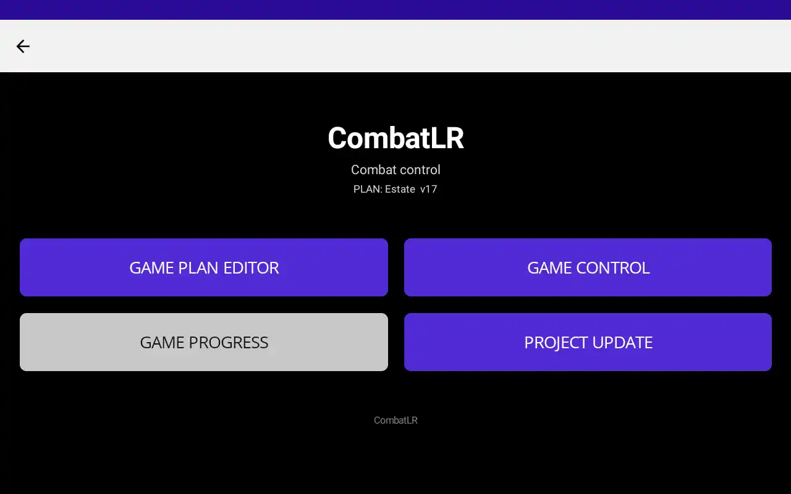
2. Design the zones
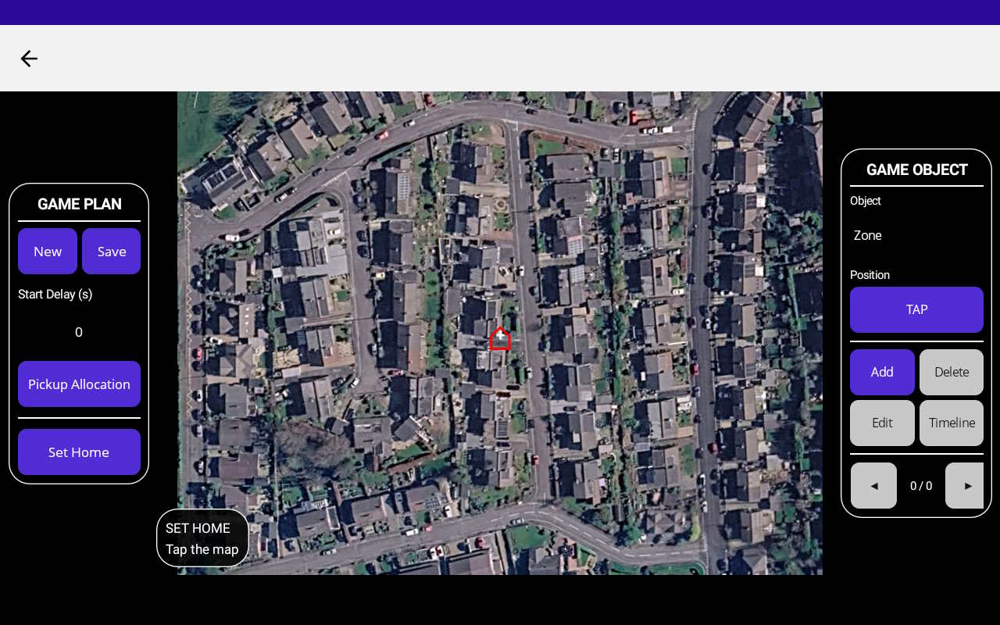
The most important part of the game plan is the home position, shown as the red house icon. On a new gameplan, the home position will be automatically placed in the centre of the map. The home position is a good point to marshall players at the start and end of the game, so choose a good position. Do this before placing any zones or pickups!
To change the home position, select then tap the position on the map.
The editor mode is zones or pickups. The GAME OBJECT pane displays Pickups or Zone appropriately. Tap the word Zone or Pickups to select the current mode.
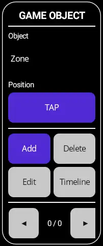
Pickups cannot be added without a zone. To add a new zone, make sure you are in Zone mode and select . Then tap on the map to place the new zone. The current zone is displayed as a green circle on the map. To move it, simply tap another position.
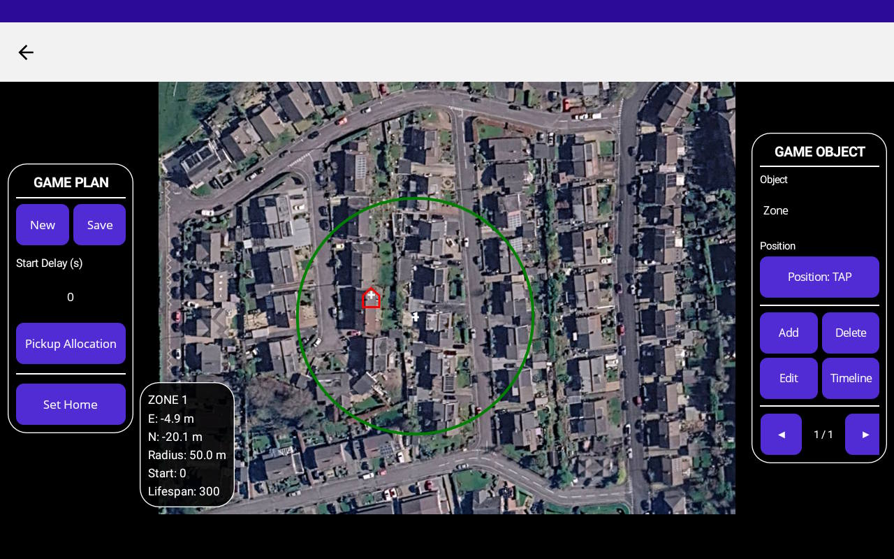
Select a zone then press to change a zones radius, start time and lifespan. See Zone Timelines
removes the currently selected zone AND ALL ITS PICKUPS. You'll be asked to confirm before proceeding. Note that deleting a zone cane leave holes in the timeline. Zone Timelines section below.
Use the forwards and backwards arrows to change the currently selected zone.
3. Place pickups
Make sure a zone is selected and tap on the Zone text if it doesn't say Pickups )
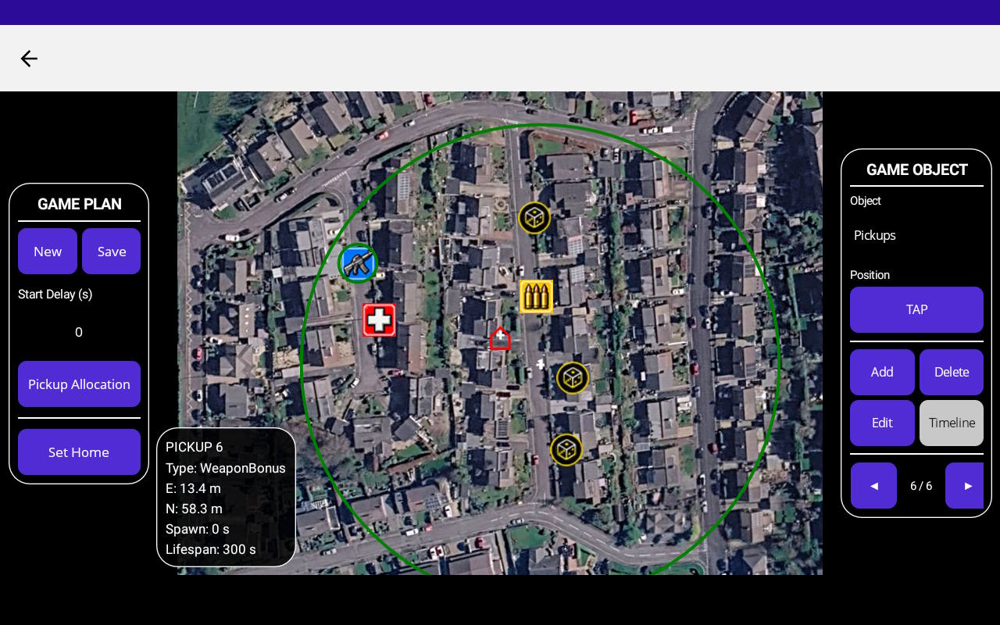
Each zone holds its own pickups. A zones pickup only become visible to the player when that zone is acitvated. Pickups on a transitioning zone are displayed during the transition.
Add, move edit and delete pickups using the same controls as zones. The current pickup is highlighted in green
CombatLR supports these pickup categories:
-
HealthRestores player health. -
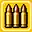
AmmoSupplies ammunition. -
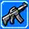
WeaponMay (or may not) give a new weapon. -
AutoThe player unit allocates a random subset of these pickups at game time.See Pickup Configuration
Think about how players will move through the site. Spread useful pickups around the play area and avoid placing them somewhere that cannot be reached safely.
Random allocation works really well. The ESP32 software ensures pickups are spaced evenly around the map and distributed between health, ammo and weapons. See Pickup Configuration
4. Pickup Configration
In Pickups mode, select Edit to change the current pickup's configuration.
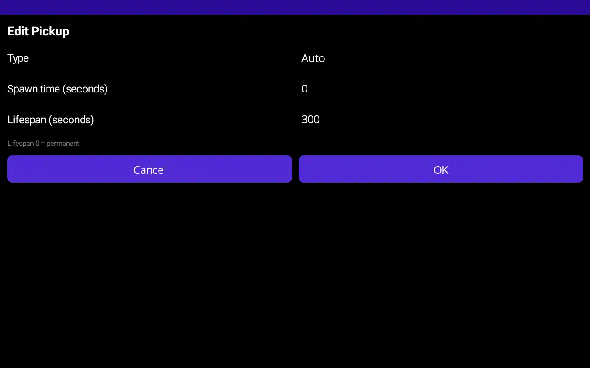
-
TypeThe pickup type. -
Spawn TimeIf this is zero, the pickup appears as soon as it's parent zone activates. If >0, the pickup becomes visibleSpawn Timeseconds after the parent zone becomes active, and it appears to all players. -
LifespanIf the pickup has a none zero spawn time, the pickup remains active for this time after spawn time. 0 = permanent until zone is deactivated.
Tap on the required field to edit it.
5. Zone Timelines
The zone timeline is the most important part of a gameplan. It defines when zones appear, when they start to move and how long they last.
Select in Zone mode to view the timeline. It is displayed as a Gantt chart style diagram, with zones displayed in blue and transitions in yellow
Time proceeds from left to right. Use the buttons to zoom in/out. Side swipe to pan across the timeline.
A well formed timeline should look like this
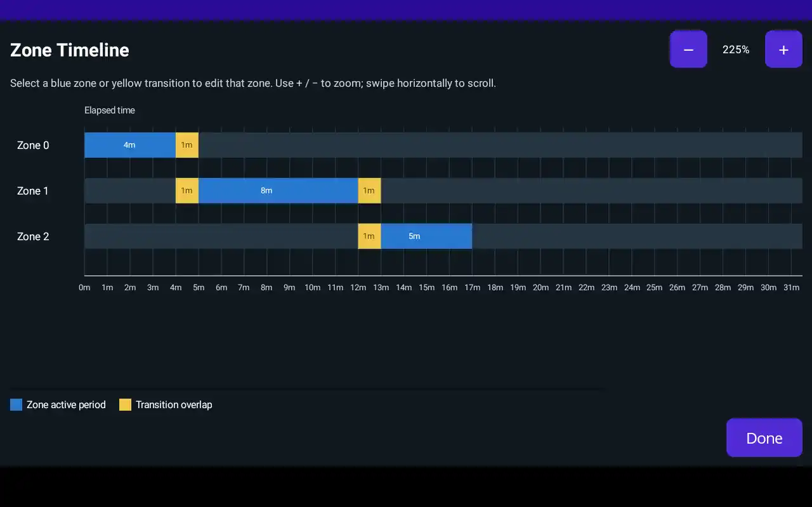
Select a zone to edit the zone configuration screen

The important part of the timelne is the transition time. Lets observe a timeline where 3 zones have been added from the game plan screen, but have no time details set. By default, the game plan editor places them consequtively on the timeline
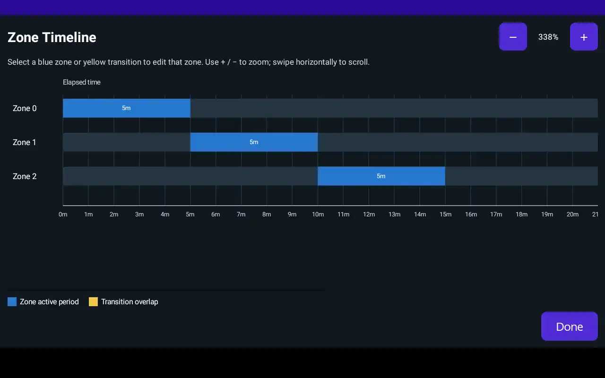
The zone times are:
| Zone | Start Time | Lifespan |
|---|---|---|
| 0 | 5 | 5 |
| 1 | 5 | 5 |
| 2 | 10 | 5 |
A zone begins its transition time when the next zone start time occurs within its lifespan. Current zone is always active for its entire lifespan
The time at which a zone transition starts and how long the transition lasts are defined by the current zone lifespan and the NEXT zone start time
Eg. We want zone 1 to start its transition at 4 minutes, the transition to last for 2 minutes.
So, 6 mins in total (4 + 2), so lifespan = 6mins
The transition time is set by having the NEXT zones start time occur within the lifespan of zone 1
The time to transition from Z1 to Z2 is calculated as (current zone start + current zone lifespan) - next zone start time
So with a transition time of 2 mins, The next zone start time is (current zone start time + current zone lifespan) - transition time
Zone 2 start time is (0 + 6) - 2 = 4
So let's set zone 1's lifetime to 6 mins
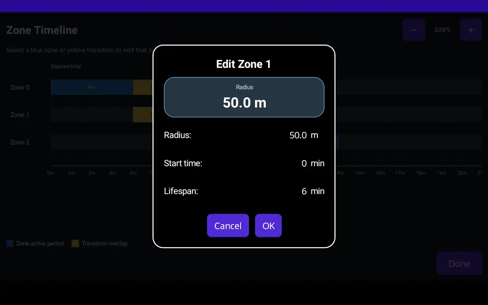
The Gantt chart updates immediately to reflect this
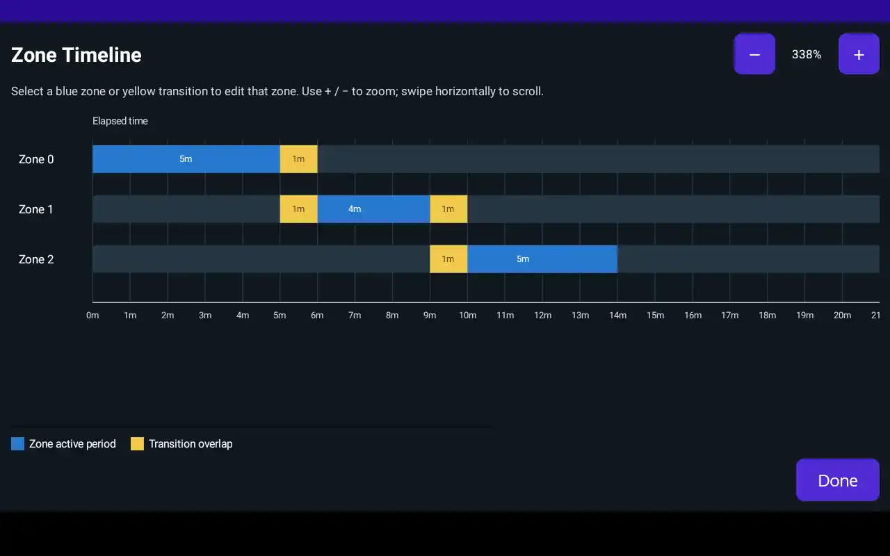
But we want a Z1-Z2 transition time of 2 minutes, so we need to change Z2 start time to 4.
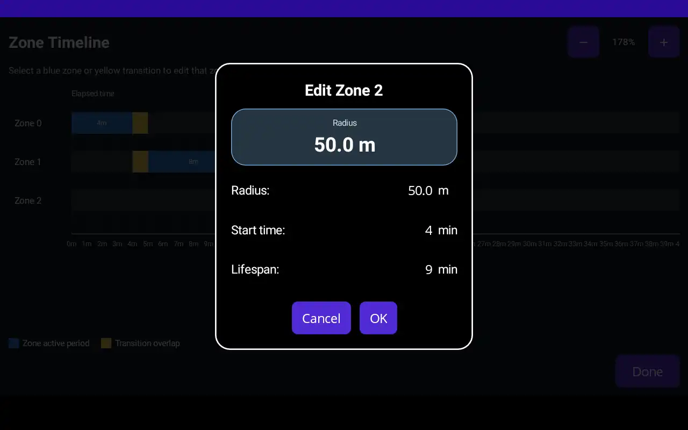
And the chart now shows Z1 with a lifespan of 6 mins, and a transition time of 2mins
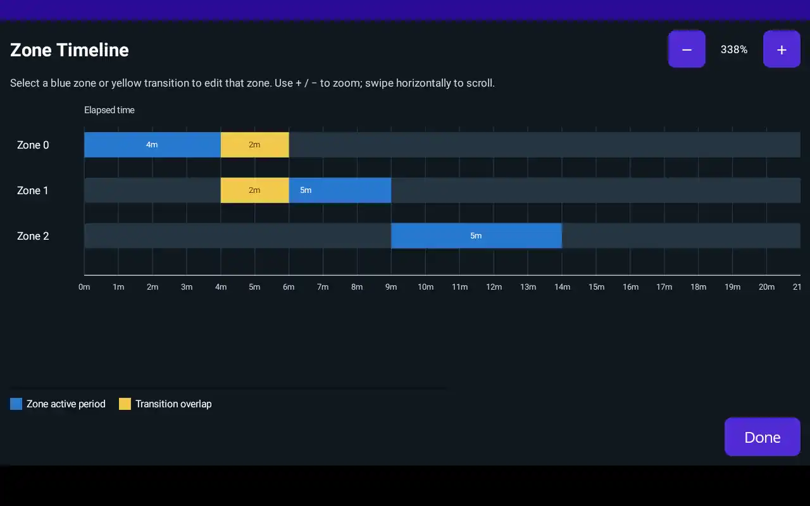
Note that Z2 will not appear until 6 minutes, so if we nneed to extend the time it is active, we need to extend it's lifespan.
Experiment with this screen until you're confident with it. As you change start times and lifespans, the software will attempt to change these values in 'downstream' zones to prevent gaps, so the zones may move around on the timeline as you experiment.
Check the selected map, player IDs, team assignments, zone timeline, pickup locations and game settings. A plan mismatch on a player unit should be resolved before starting the match.
Transfer the files
Load the map and game plan onto the player units ready for the session.
Transfer files →